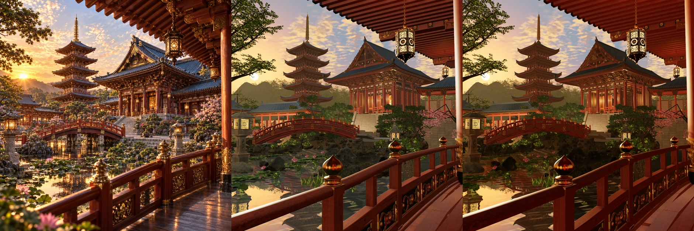
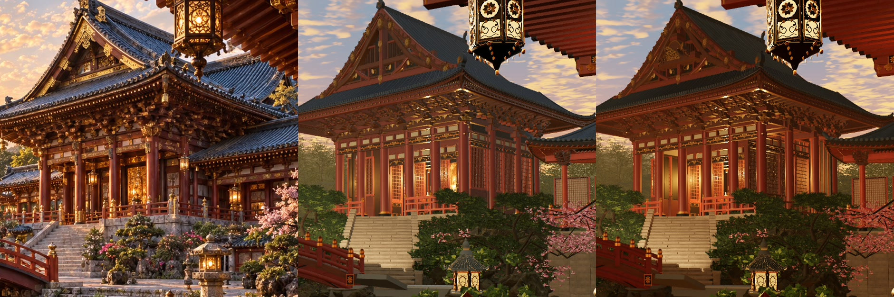
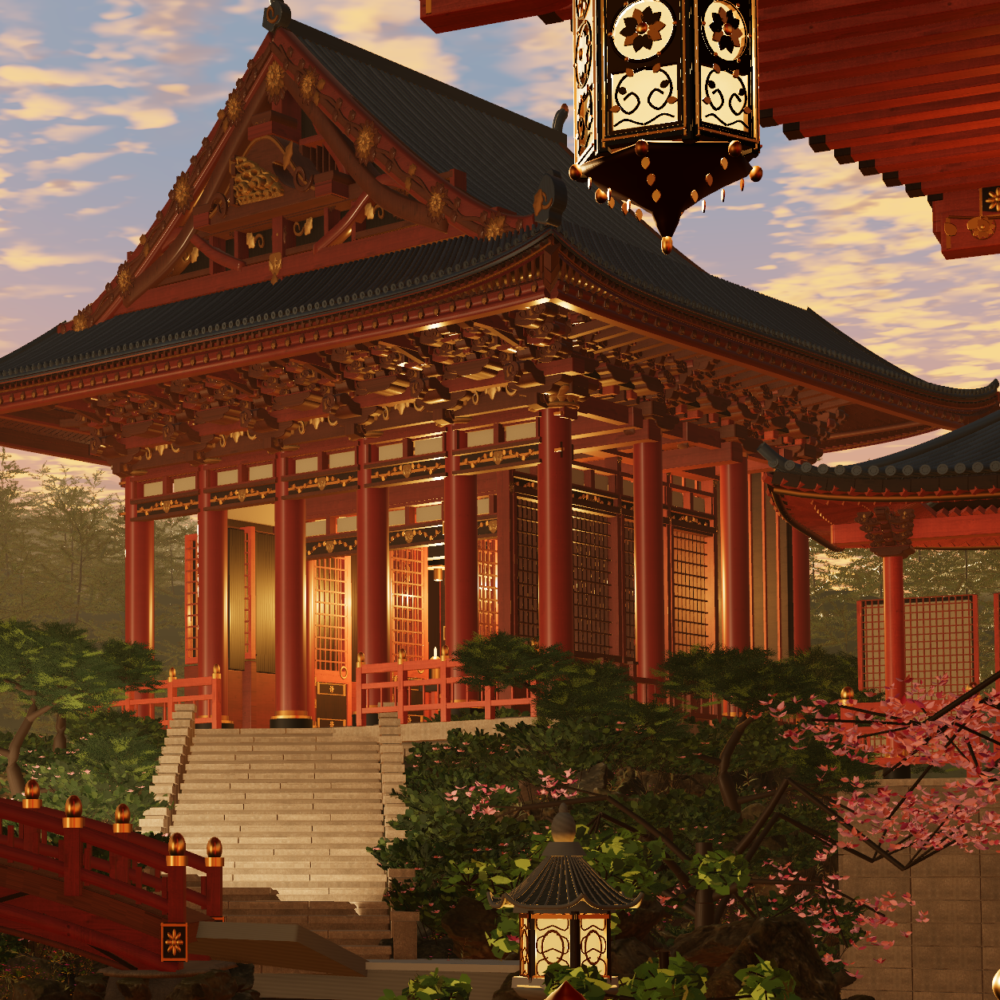
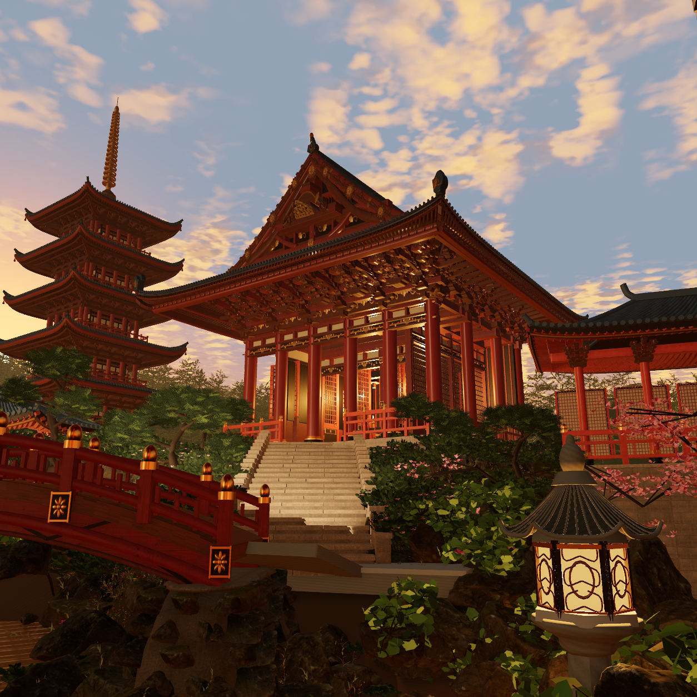
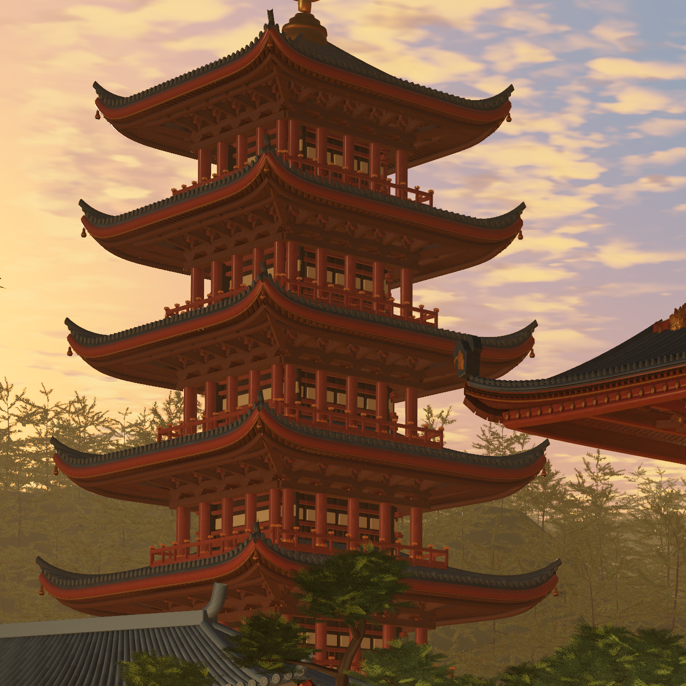
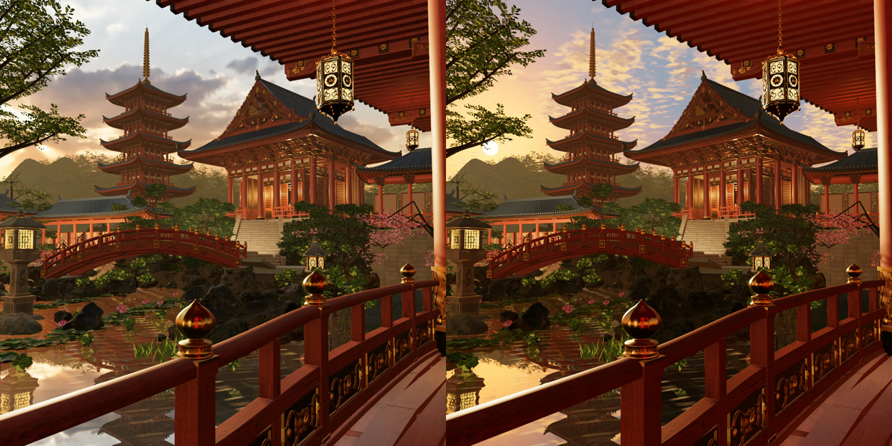

Scene02 · occupied return galleries and carried gable186 R05
Reconstruction draft · visualAccepted: false
Source e54e30397b7263adac2e7b93e5265a82bb987d8be34a4e75126bb717807cbf4f. Actual 1254 px full, hall and tower subfrusta, and retained low three-quarter were captured through the official FIFO and visually inspected over five rounds. Native validity is not photographic acceptance.
Exact review and native receipts · 23 protected source modules · Actual source176 identity · Measured cut-loop mounting · Live canonical scene02
Original supplied photographPublic mass170 R07 baselineActual spatial186 R05 draft

627px comparison derivatives only; original photograph is never a scene asset.
Original hall regionBaseline hall regionCurrent hall region


True 1254 px hall subfrustum. A deep pierced carrier joins the held170 frame; one actual cloud carving has a uniform world fit and four recessed left-cut mounting pads.
Actual 1254 px low three-quarter. Complete return floors, inner walls, ceiling ties and rails create an estimated 0.90 m clear walk strip behind held outer shafts.
True 1254 px tower-bay subfrustum. Enclosure/core is recessed behind the same roof, post, balcony and finial envelope.The final sky choice retains the successful R04 geometry. The left image below is the rejected captured HDR cloud field; the right is R05 with the original visible procedural cloud rhythm and that same field driving world/local reflections.

R04 spatial geometry held · Original visible cloud block held
Remaining gaps include regular/schematic ornament and tower infill, approximate procedural cloud structure, approximate sunset radiometry/native light transport, and existing garden/stone/bridge/water/sculpture differences. The donor cloud is a different CC BY artifact whose culture/period are unspecified. No original Japanese reference-artifact identity, photo match, physical-render equivalence or finished film is claimed.